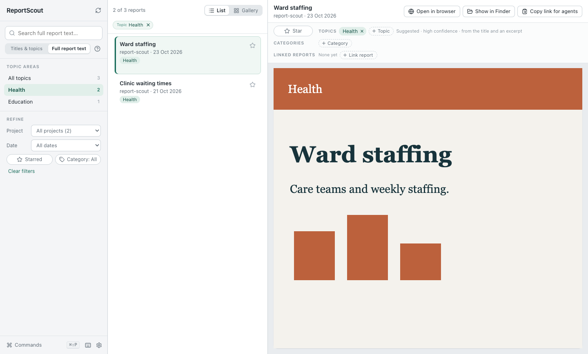
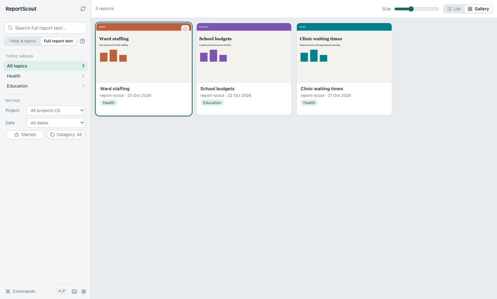

A local HTML report library for Mac and Windows · Mac version 0.3.3, Windows version 0.3.3
ReportScout
Find your reports.
Read them in one place.
Browse and search the HTML reports and visualisations your agents create. Keep the files in their project folders, with a gallery and reader to find them again.
macOS 12 or later on Apple silicon · Windows 10 or later (x64)
Mac download Developer ID signed and notarised. Windows download unsigned.


Browse, then read
Your reports, where you keep them
Choose folders containing HTML reports. ReportScout scans those folders and their subfolders, and also includes registered reports and its inbox.
Use thumbnail previews in the gallery, or a list with the reader beside your results. Refine by project, date, category or star, and link related reports.
Move a report you no longer need to the Archive. It leaves ordinary lists, searches and counts but is never deleted or moved, and keeps its star, categories, topics and links. Open the Archive from the foot of the browse panel to search it or restore a report.
Keyboard shortcuts and the command palette make actions easy to find. Settings open in their own window.


Choose where to search
Find a subject or a passage
- Titles & topics
- Search report titles, topics, catalogue keywords and your categories.
- Full report text
- Search all of those, plus project names and the text extracted from each HTML report, up to 204,800 characters per report.
Every word must match. Start typing a word to match its beginning: transl finds translation. Put words in quotation marks to find a phrase, such as "waiting times".
Search covers indexed HTML reports. It does not follow linked Markdown files, PDFs or web pages. ReportScout is a catalogue and reader; it does not generate reports.
Optional organisation
Topics you can choose and correct
Assign topics yourself to group reports by what they are about. Change them whenever you need to. Topic counts follow your search and filters; choices with no matches stay out of the way.
If you want machine suggestions, an external agent can read reports for meaning and import its suggestions through the command line. Each suggestion records its confidence and a content hash to check that it still matches the report.
Low-confidence suggestions, changed reports and reports without suggestions stay Unassigned until you choose topics or a suitable new suggestion is imported. Your own topic choices take precedence.
ReportScout does not assign topics automatically on import. The app has no built-in AI classifier, makes no AI provider calls and requires no AI subscription. Any external agent you choose has its own setup and terms.
From download to first report
Get started on your computer
Install ReportScout
On Mac, unzip the Mac download, move ReportScout to Applications and open it. On Windows, unzip the Windows download, keep the extracted folder together and run ReportScout.exe.
Choose your report folders
A new library starts empty. Click Choose report folders, or open Settings → Report folders, and pick a folder containing HTML reports.
Browse and search
Switch between gallery and list, open a report, and choose Titles & topics or Full report text for your search. Add topics when you want them.
New installs keep the inbox, configuration and index in the app’s local data folder. Existing users keep their chosen locations.
A few practical questions
What stays on my computer?
Your catalogue, search index, stars, categories, topic choices and report links are stored locally. ReportScout has no report-upload service and comes with no personal report collection. Reports can load approved external chart or font resources, so some reports need a network connection. If you ask an external agent for topic suggestions, its access to your reports depends on the agent you choose.
Which computers can run it?
The Mac download supports macOS 12 or later on Apple silicon (arm64). The Windows download supports Windows 10 or later on x64 computers. Mac download Developer ID signed and notarised. Windows download unsigned.
What happens to an archived report?
Nothing happens to the file. ReportScout saves an Archive mark with your other marks. Version 0.3.0 does not know that mark and drops it when it saves any mark change, so if several computers share one inbox, update every Mac to 0.3.2 or later and every Windows PC to 0.3.3 or later before archiving reports.
Does it move my project reports?
Reports found in your chosen project folders stay there. Registered reports and reports captured into the app’s inbox are also included in the catalogue.
Can it search my PDFs or Markdown notes?
No. ReportScout reads HTML reports. It does not index linked Markdown files, PDFs or the contents of web pages.
Bring your HTML reports together
Mac 0.3.3, Windows 0.3.3 · macOS 12 or later on Apple silicon · Windows 10 or later (x64)